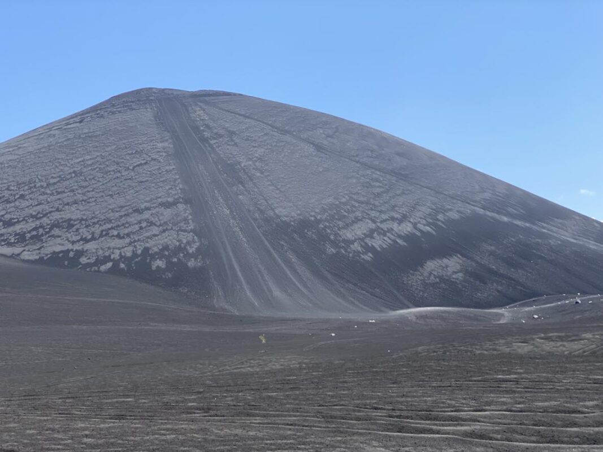
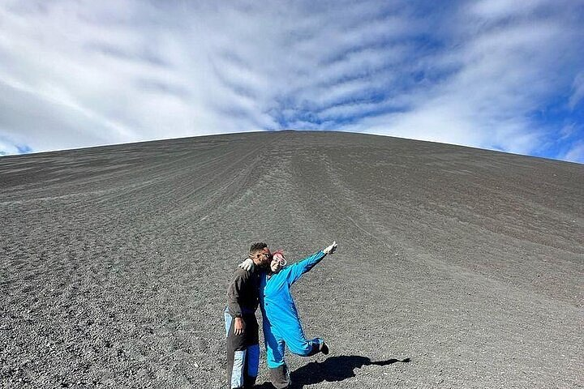
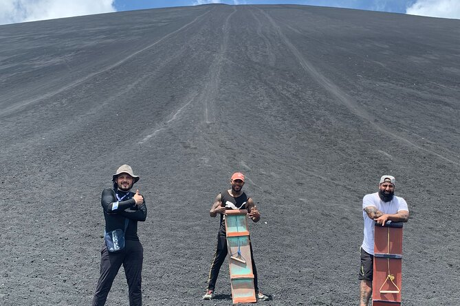

Once I was on the ground, I liked looking back at the path I had taken to slide down the volcano. It was honestly really high. When I reached the bottom, my hair, clothes, and face were all covered in volcanic sand; I looked like I had just come out of a mine. Personally, when I got to the ground, I couldn’t stand up right away because it was my first time having an experience like this, so maybe because of the adrenaline or I don’t even know why, I just sat there processing everything. But I also took the chance to record and take pictures of those coming down after me. What surprised me the most was that when it was my mother’s turn, she had no problems at all, even though she was going really fast, but I still worried. Honestly, it was one of the best experiences I’ve ever had.
  